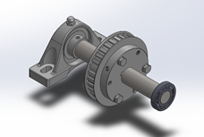

Projects > Shaft Design Project
Shaft Design Project
September 2021 - October 2021

Figure 1: Machine drive tensioner assembly, including shaft, bearings, bushing connection, and sheave.
Background and Key Design Features
In a team of 3 students, I designed and machined an
aluminum prototype shaft for tensioning a machine drive.
The drive belt is tensioend by a constant force of 100 lbf
and the shaft rotates between 100-300 rpm, except when undergoing
maintenance or a scheduled shutdown. The shaft
is supported by two bearings: a pillow
block bearing on one end and a ball bearing on the other.
At a distance of 3.375" from one of the ends, the shaft
must interface with a 4" 32-teeth timing belt sheave.
To achieve this connection, the team selected a 15/16"
quick-disconnect clamp-on bushing with 3 1/4-20 screws.
12L14 steel was selected for the material of the final
shaft due primarily to its high machinability and strength.
The complete shaft assembly is shown in Figure 1.
Figure 2: Exploded view of machine driver tensioner assembly. The final cost of the machine drive tensioner assembly is $202.54, with the shaft itself contributing just over $15 in material cost. See Table 1 for a costed bill of materials. Since the shaft is subjected to a high number of cycles at a relatively low load, the primary failure mode considered is fatigue. The shaft was computed to have an infinite fatigue lifetime with a minimum fatigue safety factor (FSF) of 15.702 at the point of maxmimum bending moment. It is also important to note that there is no keyway on the shaft, as the pressured generated at the interface of the fit between the shaft and the clamp-on bushing was determined to be more than sufficient. Given the low torque requirements of the shaft and the frictional force between the bushing and the shaft, the factor of safety for maintaining no-slip at the interface was calculated to be 90.8. An exploded view of the machine drive tensioner assembly is shown in Figure 2.
Table 1: Costed Bill of Materials
| Part Name | Part Number | Quantity | Cost |
|---|---|---|---|
| Ultra-Machinable 12L14 Carbon Steel Rod, 1" Diameter | 90075K232 | 1 | $23.92 per foot |
| Quick-Disconnect Bushing, Clamp on, SDS Style, for 15/16" Shaft Diameter (clamping screws included) | 6086K315 | 1 | $24.42 |
| 1/4-20 Screws 18-8 Stainless Steel Pan Head Phillips Screws (bushing to sheave connection) | 91772A545 | 3 | $7.37 per pack of 25 |
| 1/4-20 Medium-Strength Hex Nuts (bushing to sheave connection) | 95505A601 | 3 | $4.42 per pack of 100 |
| 4” 32-Teeth L Timing Belt Sheave | 6495k218 | 1 | $54.51 |
| Fafnir® Miniature Ball Bearing | S8K | 1 | $20.85 |
| Mounted Steel Ball Bearing with Cast Iron Housing for 3/4" Shaft Diameter, with Set Screw | 7728T53 | 1 | $86.54 |
| Prorated total: | $202.54 | ||